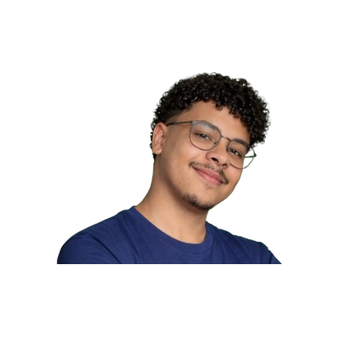

DESENVOLVENDO SOLUÇÕES E APRENDENDO NA PRÁTICA
Sou estudante de Análise e Desenvolvimento de Sistemas, com formação técnica em Redes de Computadores. Tenho conhecimento em suporte técnico, hardware e desenvolvimento front-end. Busco minha primeira oportunidade na área de TI para aplicar meus conhecimentos, aprender na prática e crescer profissionalmente.

Habilidades
Dev WEB
Criação de páginas web utilizando HTML e CSS, com foco em estrutura e layout responsivo.
Hardware
Montagem e manutenção de computadores, identificação de componentes e diagnóstico de falhas.
Programação
Contato com linguagens C e C#, além de conceitos de Programação Orientada a Objetos (POO).

Prazer, eu sou o Pedro!
Meu nome é Pedro Luis e atualmente estou cursando o 4º período de Análise e Desenvolvimento de Sistemas. Possuo formação técnica em Redes de Computadores, onde adquiri conhecimentos em fundamentos de redes, suporte técnico, montagem e manutenção de computadores.
Além da formação acadêmica, já realizei alguns trabalhos práticos na área de hardware, como montagem, limpeza e manutenção de computadores para amigos e conhecidos, o que contribuiu para o desenvolvimento das minhas habilidades técnicas. Também desenvolvi conhecimentos em sistemas operacionais Windows, noções de Linux e familiaridade com banco de dados, além de habilidades em lógica de programação e desenvolvimento front-end utilizando HTML e CSS.
Busco minha primeira oportunidade no mercado de trabalho na área de Tecnologia da Informação, com o objetivo de aplicar meus conhecimentos na prática, adquirir experiência profissional e evoluir continuamente como profissional. Sou uma pessoa dedicada, responsável, com facilidade de aprendizado e gosto de trabalhar em equipe.
Projetos
Site Nutricionista
Projeto desenvolvido em equipe com o objetivo de criar um site funcional para um nutricionista. O sistema utilizou HTML e CSS no front-end e PHP no back-end, com integração ao banco de dados para armazenamento e consulta de informações. O projeto proporcionou experiência prática em desenvolvimento web, trabalho em equipe e integração entre sistema e banco de dados.
Sistema de Locadora de Veículos em Linguagem C
Sistema desenvolvido em equipe para simular o funcionamento de uma locadora de veículos. O programa permite cadastrar carros e clientes, listar informações e realizar aluguel e devolução de veículos, utilizando estruturas de dados (struct), funções e controle de fluxo. O projeto contribuiu para o desenvolvimento de habilidades em lógica de programação, organização de código e trabalho em equipe.
Automação de Organização de Arquivos e Pastas com Python
Projeto simples desenvolvido em Python com o objetivo de praticar automação de tarefas. O sistema permite selecionar uma pasta e organiza automaticamente arquivos em diretórios específicos de acordo com suas extensões, criando as pastas quando necessário. O projeto aplica conceitos de lógica de programação, manipulação de arquivos e organização de dados.